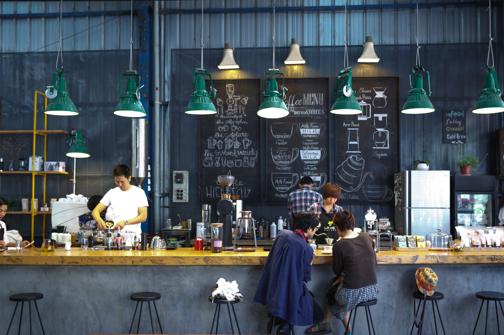

This exploratory data analysis project shows the sales data of a New Zealand-based coffee shop. This initiative aims to uncover patterns, trends, and insights into customer preferences, peak sales periods, and external factors impacting revenue. The entire project was carried out in MS Excel
A project based on the sales analysis trend in small shop for sales of cookies

Road traffic accidents are a leading cause of death worldwide, particularly among young people aged 15-29.The World Health Organization (WHO) estimates that approximately 1.35 million people die each year due to road traffic crashes.Despite ongoing global efforts to enhance road safety, road accidents remain a pervasive and significant public health issue. The project examines the countries of the world with more road accident rate, Age of car driver among other insights where drawn using Excel Visualization.